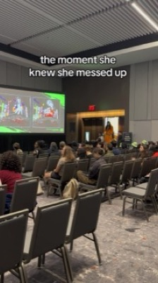
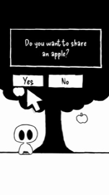
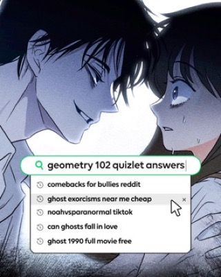
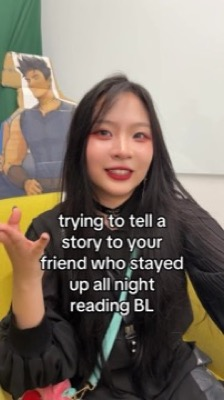

v2 · pulled 2026-11-05 · public evidence only · data cost $0.45 · not affiliated with WEBTOON · SEEN = shown by a source, INFERRED = reasoned from it
Estimated US organic visits/month (DataForSEO). Hover dashed bands for moves + lift.
Lift = avg of month-of + 2 after vs 2 before. Causation INFERRED.
| Channel | Worked | Didn't | |
|---|---|---|---|
| Search | Per-series public pages; keyword count +70% before the 2022 step; 63% non-brand | Organic −44% from May 2024 peak; ranked keywords −47% Mar→Oct 2026 | src src |
| Meta ads | 187 live, series-named, video, straight to store; 3,128 total, ~7-day median run | — | src src |
| TikTok | 2.2M followers; one-series live-event bursts (FOG LAND/NYCC) top the chart | Generic fandom/trend posts sit in the bottom half | src |
| AI answers | Named as the 13+ caution in kid prompts | Not recommended for under-13s | src |
| Creators/contests | 19K entrants 2015; $1M pool 2022; Canvas→Originals | Canvas creators say they're buried (Reddit) | src src src |
| IP adaptations | Netflix titles Jan 2022 line up with the +55% step | Flat MAU through 2025–26 adaptation slate | src src |




Already done, removed: waitlist landing page; no-coins/no-ads/nothing-expires promise.
SEEN: 63% of WEBTOON's search traffic is non-brand, landing on per-series pages; ranked keywords grew 70% Jul→Oct 2021 right before the +55% step. SEEN: broad story and fairy-tale searches (Red Riding Hood 110K/mo, Goldilocks 40.5K, 'stories for kids') are won by storyberries with plain public story pages; Epic, the app leader, sits #8–19. INFERRED: apps behind a login are invisible to search; a public first episode per series is the cheapest acquisition channel available. src src src src
Build public, crawlable web pages for every Loratone story: /stories/<slug> with title, age band, 1-paragraph summary, the first pages readable on the page (images + text alt), a 'sound on' preview that plays the story's soundscape and music under the first pages (Loratone's edge: no story site has it), and an 'Open in Loratone' app link (deep link + store badges). Add /collections/picture-books, /collections/kids-manga, /collections/fairy-tales, /collections/ages-4-6, /collections/ages-7-9 hub pages. Generate them statically from Supabase (one script, no new framework if the existing web target can do it). Include schema.org Book/CreativeWork JSON-LD, sitemap.xml, OG images from cover art. Target keywords from docs/research/webtoon-growth/parent_keywords.csv. Nothing behind the parental gate is exposed; no child data on public pages.
SEEN: WEBTOON's first English Challenge League drew 19,000+ entrants (2015); contests continued through 2025 ($150K grand prize, winners become Originals). 90–100 Originals came from Canvas by 2019. src src src
Draft a 'Loratone Story Sprouts' creator contest for illustrators and children's authors: theme, two age bands (4–7 picture book, 8–12 kids' manga), submission rules (3 story parts, full color, original IP, all content rated for ages 4–12), judging criteria (read-aloud quality, art, age fit), prizes (cash + publication on Loratone with narration/score produced by us), timeline (6 weeks open, 2 weeks judging), and official-rules boilerplate. Then write 5 recruitment posts for r/childrensbooks, r/kidlit, r/WebtoonCanvas and Instagram illustrator hashtags, and a list of 20 SCBWI chapters / art schools to email.
SEEN: Canvas works 'like YouTube' and feeds the Originals pipeline (Lore Olympus: Canvas 2018 → 1.1B views). SEEN: Common Sense's main knock is no pre-moderation. INFERRED: keep the open supply, add the review step parents need. src src src
Spec a creator upload flow for Loratone where every submission enters a review queue before any child sees it. Include: Supabase tables (submissions, review_decisions, creator_profiles), review checklist (violence, scariness, language, romance thresholds by age band), reviewer UI, creator notifications, and a 'promote to Loratone Original' path for top-performing series. Keep Riverpod hand-written providers, no codegen. Output a spec file in specs/.
SEEN: readers 13–17 say a new drop 'feels like an event' and the wait builds suspense; WEBTOON runs daily schedule tabs (Mon–Sun). INFERRED: a fixed release day per series, with a fresh soundscape/score for each new part, gives kids a reason to come back without pressure tactics. src src
Add a weekly release calendar to Loratone: each series has a release day; the library shows a 'New' badge on series with a fresh part; an opt-in local notification (flutter_local_notifications, no backend) tells the parent, at a time the parent picks behind the parental gate, that a new story part is ready. Each new part ships with its own soundscape and music cues so it feels like stepping back into that world. No streaks, no countdowns, no pressure. Add widget tests for the badge logic.
SEEN: across 5 parent prompts ChatGPT named Hoopla 4×, Epic 3×, Loratone 0×; it cited public-library resource pages (Comics Plus Children's Library), Common Sense, and small-startup 'best story apps for kids' listicles. INFERRED: AI answers are pulled from a short list of citable pages; getting on them is outreach, not ad spend. src src src
Make a list of 40 pages likely to be cited when parents ask AI assistants for kid-safe comics or story apps with narration and music: public-library 'kids digital resources' pages, Common Sense Media app reviews, 'best story apps for kids 2026' and 'best reading apps for kids' listicles, homeschool resource roundups. For each: URL, who maintains it, contact route, what they require to list an app. Draft a 120-word pitch per type (librarian, reviewer, listicle author) stating ages, no ads, no in-app purchases, picture books + kids' manga with soundscapes and contextual music that immerse kids in each story's world, and an offer of free access codes. Also draft our own comparison page 'Best story apps for kids with sound and music (2026)' that is honest about competitors.
SEEN: WEBTOON's top TikToks are one series (FOG LAND 13/22 of top quarter) pushed through a live event (NYCC 9/22), and all 4 top covers read are live-action footage; comic-art covers sit in the bottom. SEEN: every one of the first 30 active Meta ads sells a single series, not the app. INFERRED: lead with one character kids already love, shown in the real world (costume, plush, a parent reading aloud), not with app screenshots. src src
Pick Loratone's single strongest series and build a 14-post short-video burst around it (TikTok, Reels, Shorts). Formulas: (A) real-world character: a costumed version of Lora or the main (human) character in a library/park, on-screen line ≤ 8 words in the voice of a 'notice' or 'sighting'; (B) parent POV: 'reading [series] with sound on' — real hands holding the phone while the music and soundscape shift as the scene changes (forest → storm → harbor); (C) sound reveal: 'what [scene] sounds like in [series]'. Each post: hook text, shot list, caption, 2 hashtags (series name + one), CTA = App Store link. Then write 3 Meta ad variants in the WEBTOON pattern: 'Read <[series]>, only on Loratone' + 15s clip, linking straight to the store.
SEEN: WEBTOON's DC/Archie 'Supercasting' put known characters in the webtoon format (Batman: Wayne Family Adventures 715K subscribers). SEEN: storyberries wins search with public-domain fairy tales (Goldilocks 40.5K/mo, Billy Goats Gruff 33.1K). Many top fairy-tale searches are animal tales; Loratone's no-animals rule narrows this to human-led tales (Goldilocks, Red Riding Hood 110K, Grimm/Andersen). INFERRED: familiar public-domain titles give both name recognition and free search demand. src src src
List 20 public-domain stories (Grimm, Andersen, Perrault, Arabian Nights, world folk tales) with human protagonists only, no animal-led tales (Loratone rule: no animals) that suit ages 4–12, rank them by recognition among US parents and fit for a kids' manga retelling, and for the top 5 write a one-paragraph series pitch, 6-part story outline, and the soundscape/music cues per part.
SEEN: ChatGPT's answers for kid comics cite public-library resource pages (Comics Plus Children's Library, hoopla). SEEN: WEBTOON took its hits into print (Unscrolled). INFERRED: librarians and teachers are both gatekeepers and AI-citable sources. src src
Draft a Loratone educator kit: one-page overview, 3 lesson plans (listening comprehension with narrated stories, sequencing with comic panels, create-your-own-panel), a free classroom access code flow spec, and an outreach email for school librarians and homeschool co-ops. Keep claims factual; no student data collection beyond what COPPA/FERPA allow.
SEEN: WEBTOON publishes creator splits (50% ad revenue, 70% Super Likes) and the Patreon button; Reddit backlash centers on Canvas creators feeling buried. INFERRED: a public, simple split recruits creators and keeps them. src src src
Design a Loratone creator revenue-share model funded from family subscriptions: pool % of net revenue, split by minutes read per series, minimum guarantee for Originals, monthly payout threshold. Write the public 'How creators get paid' page and a spreadsheet model at 1K / 10K / 100K subscribers.
SEEN: the top 'downfall' thread says WEBTOON used to win with creator interviews and behind-the-scenes, and that stopped. INFERRED: cheap content that builds loyalty to creators and the platform. src
Plan a recurring 'Meet the storyteller' series for Loratone social: 60s behind-the-scenes per creator (sketch to finished page to narrated version), 5 interview questions suitable for kids and parents, posting cadence, and a template for the creator to share it on their own accounts.
| Day | Do |
|---|---|
| 1 | Pick the one lead series (play 6); start /stories/<slug> pages for it + 5 public-domain titles (play 1) |
| 2 | Formula A clip #1: real-world character sighting |
| 3 | Formula C sound-reveal clip |
| 4 | Build the 40-page citation list (play 5); send first 10 pitches |
| 5 | Formula B parent POV clip |
| 6 | Launch 3 Meta ads 'Read <series>, only on Loratone' at a small daily cap |
| 7 | Review: plays/post, store taps; drop worst formula |
| 8 | Formula A #2 with the winning angle |
| 9 | Publish 'Best story apps for kids with sound and music (2026)' comparison page |
| 10 | Contest page live (play 2); post to r/childrensbooks + r/kidlit |
| 11 | Public-domain teaser clip (play 7) |
| 12 | Formula B #2 |
| 13 | Send next 15 citation pitches; Meet-the-storyteller #1 (play 10) |
| 14 | Check: installs from social + ads (the one number); public pages indexed in Search Console |
| Pull | Cost |
|---|---|
| Traffic history 2020-10→2026-10 | $0.2076 |
| WEBTOON ranked keywords (300) | $0.0480 |
| Epic ranked keywords (200) | $0.0360 |
| Parent keyword volume (80) | $0.0900 |
| Keyword overview retry (42) | $0.0160 |
| Storyberries ranked keywords (100) | $0.0240 |
| Meta ad library (2 searches + 2 pulls) | $0.0056 |
| TikTok 100 posts | $0.0005 |
| Reddit search ×3 (discarded: off-topic) | $0.0056 |
| ChatGPT answers ×5 | $0.0140 |
| Google SERP ×5 | $0.0025 |
| Total | $0.4498 |